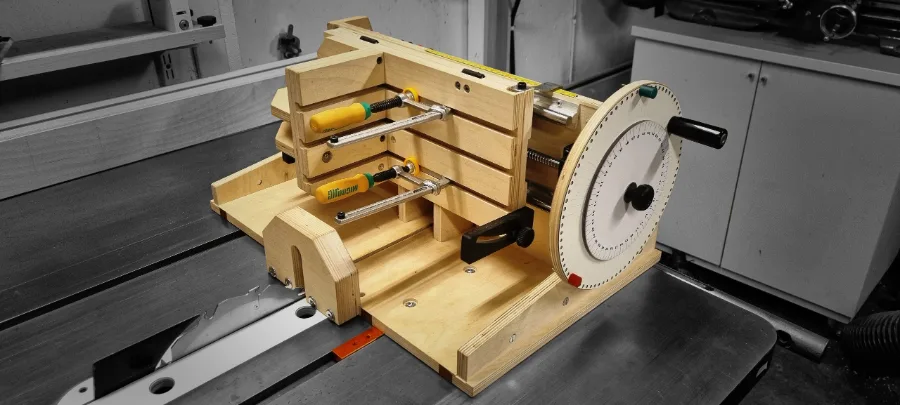

Butik / För snickeriet
En genomtänkt jigg.
Bygg den själv.
The Superjig – digitala byggplaner till Olas verkstadslösning.

The Superjig · Build plans
Från Ola.
Till din verkstad.
Produkten är byggplaner för att själv bygga jiggen. Det är inte en färdig maskin eller färdigmonterad jigg.
Aktuellt pris, betalning och leveransinformation finns i den befintliga webbutiken.
Se pris & köp byggplanerDu går vidare till Carmonius ordinarie butik.
Se The Superjig på YouTube ↗Från din idé till något alldeles eget